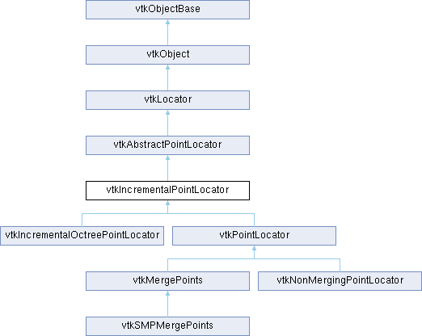

|
Etrek
|
|
Etrek
|
Abstract class in support of both point location and point insertion. More...
#include <vtkIncrementalPointLocator.h>

Public Member Functions | |
| vtkTypeMacro (vtkIncrementalPointLocator, vtkAbstractPointLocator) | |
| void | PrintSelf (ostream &os, vtkIndent indent) override |
| virtual vtkIdType | FindClosestInsertedPoint (const double x[3])=0 |
| virtual int | InitPointInsertion (vtkPoints *newPts, const double bounds[6])=0 |
| virtual int | InitPointInsertion (vtkPoints *newPts, const double bounds[6], vtkIdType estSize)=0 |
| virtual vtkIdType | IsInsertedPoint (double x, double y, double z)=0 |
| virtual vtkIdType | IsInsertedPoint (const double x[3])=0 |
| virtual int | InsertUniquePoint (const double x[3], vtkIdType &ptId)=0 |
| virtual void | InsertPoint (vtkIdType ptId, const double x[3])=0 |
| virtual vtkIdType | InsertNextPoint (const double x[3])=0 |
| Public Member Functions inherited from vtkAbstractPointLocator | |
| virtual vtkIdType | FindClosestPointWithinRadius (double radius, const double x[3], double &dist2)=0 |
| vtkTypeMacro (vtkAbstractPointLocator, vtkLocator) | |
| virtual vtkIdType | FindClosestPoint (const double x[3])=0 |
| vtkIdType | FindClosestPoint (double x, double y, double z) |
| virtual void | FindClosestNPoints (int N, const double x[3], vtkIdList *result)=0 |
| void | FindClosestNPoints (int N, double x, double y, double z, vtkIdList *result) |
| virtual void | FindPointsWithinRadius (double R, const double x[3], vtkIdList *result)=0 |
| void | FindPointsWithinRadius (double R, double x, double y, double z, vtkIdList *result) |
| virtual double * | GetBounds () |
| virtual void | GetBounds (double *) |
| vtkGetMacro (NumberOfBuckets, vtkIdType) | |
| Public Member Functions inherited from vtkLocator | |
| virtual void | Update () |
| virtual void | Initialize () |
| virtual void | BuildLocator ()=0 |
| virtual void | ForceBuildLocator () |
| virtual void | FreeSearchStructure ()=0 |
| virtual void | GenerateRepresentation (int level, vtkPolyData *pd)=0 |
| vtkTypeMacro (vtkLocator, vtkObject) | |
| void | PrintSelf (ostream &os, vtkIndent indent) override |
| virtual void | SetDataSet (vtkDataSet *) |
| vtkGetObjectMacro (DataSet, vtkDataSet) | |
| vtkSetClampMacro (MaxLevel, int, 0, VTK_INT_MAX) | |
| vtkGetMacro (MaxLevel, int) | |
| vtkGetMacro (Level, int) | |
| vtkSetMacro (Automatic, vtkTypeBool) | |
| vtkGetMacro (Automatic, vtkTypeBool) | |
| vtkBooleanMacro (Automatic, vtkTypeBool) | |
| vtkSetClampMacro (Tolerance, double, 0.0, VTK_DOUBLE_MAX) | |
| vtkGetMacro (Tolerance, double) | |
| vtkSetMacro (UseExistingSearchStructure, vtkTypeBool) | |
| vtkGetMacro (UseExistingSearchStructure, vtkTypeBool) | |
| vtkBooleanMacro (UseExistingSearchStructure, vtkTypeBool) | |
| vtkGetMacro (BuildTime, vtkMTimeType) | |
| bool | UsesGarbageCollector () const override |
| Public Member Functions inherited from vtkObject | |
| vtkBaseTypeMacro (vtkObject, vtkObjectBase) | |
| virtual void | DebugOn () |
| virtual void | DebugOff () |
| bool | GetDebug () |
| void | SetDebug (bool debugFlag) |
| virtual void | Modified () |
| virtual vtkMTimeType | GetMTime () |
| void | PrintSelf (ostream &os, vtkIndent indent) override |
| void | RemoveObserver (unsigned long tag) |
| void | RemoveObservers (unsigned long event) |
| void | RemoveObservers (const char *event) |
| void | RemoveAllObservers () |
| vtkTypeBool | HasObserver (unsigned long event) |
| vtkTypeBool | HasObserver (const char *event) |
| vtkTypeBool | InvokeEvent (unsigned long event) |
| vtkTypeBool | InvokeEvent (const char *event) |
| std::string | GetObjectDescription () const override |
| unsigned long | AddObserver (unsigned long event, vtkCommand *, float priority=0.0f) |
| unsigned long | AddObserver (const char *event, vtkCommand *, float priority=0.0f) |
| vtkCommand * | GetCommand (unsigned long tag) |
| void | RemoveObserver (vtkCommand *) |
| void | RemoveObservers (unsigned long event, vtkCommand *) |
| void | RemoveObservers (const char *event, vtkCommand *) |
| vtkTypeBool | HasObserver (unsigned long event, vtkCommand *) |
| vtkTypeBool | HasObserver (const char *event, vtkCommand *) |
| template<class U, class T> | |
| unsigned long | AddObserver (unsigned long event, U observer, void(T::*callback)(), float priority=0.0f) |
| template<class U, class T> | |
| unsigned long | AddObserver (unsigned long event, U observer, void(T::*callback)(vtkObject *, unsigned long, void *), float priority=0.0f) |
| template<class U, class T> | |
| unsigned long | AddObserver (unsigned long event, U observer, bool(T::*callback)(vtkObject *, unsigned long, void *), float priority=0.0f) |
| vtkTypeBool | InvokeEvent (unsigned long event, void *callData) |
| vtkTypeBool | InvokeEvent (const char *event, void *callData) |
| virtual void | SetObjectName (const std::string &objectName) |
| virtual std::string | GetObjectName () const |
| Public Member Functions inherited from vtkObjectBase | |
| const char * | GetClassName () const |
| virtual vtkTypeBool | IsA (const char *name) |
| virtual vtkIdType | GetNumberOfGenerationsFromBase (const char *name) |
| virtual void | Delete () |
| virtual void | FastDelete () |
| void | InitializeObjectBase () |
| void | Print (ostream &os) |
| void | Register (vtkObjectBase *o) |
| virtual void | UnRegister (vtkObjectBase *o) |
| int | GetReferenceCount () |
| void | SetReferenceCount (int) |
| bool | GetIsInMemkind () const |
| virtual void | PrintHeader (ostream &os, vtkIndent indent) |
| virtual void | PrintTrailer (ostream &os, vtkIndent indent) |
Additional Inherited Members | |
| Static Public Member Functions inherited from vtkObject | |
| static vtkObject * | New () |
| static void | BreakOnError () |
| static void | SetGlobalWarningDisplay (vtkTypeBool val) |
| static void | GlobalWarningDisplayOn () |
| static void | GlobalWarningDisplayOff () |
| static vtkTypeBool | GetGlobalWarningDisplay () |
| Static Public Member Functions inherited from vtkObjectBase | |
| static vtkTypeBool | IsTypeOf (const char *name) |
| static vtkIdType | GetNumberOfGenerationsFromBaseType (const char *name) |
| static vtkObjectBase * | New () |
| static void | SetMemkindDirectory (const char *directoryname) |
| static bool | GetUsingMemkind () |
| Protected Member Functions inherited from vtkLocator | |
| virtual void | BuildLocatorInternal () |
| void | ReportReferences (vtkGarbageCollector *) override |
| Protected Member Functions inherited from vtkObject | |
| void | RegisterInternal (vtkObjectBase *, vtkTypeBool check) override |
| void | UnRegisterInternal (vtkObjectBase *, vtkTypeBool check) override |
| void | InternalGrabFocus (vtkCommand *mouseEvents, vtkCommand *keypressEvents=nullptr) |
| void | InternalReleaseFocus () |
| Protected Member Functions inherited from vtkObjectBase | |
| vtkObjectBase (const vtkObjectBase &) | |
| void | operator= (const vtkObjectBase &) |
| Static Protected Member Functions inherited from vtkObjectBase | |
| static vtkMallocingFunction | GetCurrentMallocFunction () |
| static vtkReallocingFunction | GetCurrentReallocFunction () |
| static vtkFreeingFunction | GetCurrentFreeFunction () |
| static vtkFreeingFunction | GetAlternateFreeFunction () |
| Protected Attributes inherited from vtkAbstractPointLocator | |
| double | Bounds [6] |
| vtkIdType | NumberOfBuckets |
| Protected Attributes inherited from vtkLocator | |
| vtkDataSet * | DataSet |
| vtkTypeBool | UseExistingSearchStructure |
| vtkTypeBool | Automatic |
| double | Tolerance |
| int | MaxLevel |
| int | Level |
| vtkTimeStamp | BuildTime |
| Protected Attributes inherited from vtkObject | |
| bool | Debug |
| vtkTimeStamp | MTime |
| vtkSubjectHelper * | SubjectHelper |
| std::string | ObjectName |
| Protected Attributes inherited from vtkObjectBase | |
| std::atomic< int32_t > | ReferenceCount |
| vtkWeakPointerBase ** | WeakPointers |
Abstract class in support of both point location and point insertion.
Compared to a static point locator for pure location functionalities through some search structure established from a fixed set of points, an incremental point locator allows for, in addition, point insertion capabilities, with the search structure maintaining a dynamically increasing number of points. There are two incremental point locators, i.e., vtkPointLocator and vtkIncrementalOctreePointLocator. As opposed to the uniform bin-based search structure (adopted in vtkPointLocator) with a fixed spatial resolution, an octree mechanism (employed in vtkIncrementalOctreePointlocator) resorts to a hierarchy of tree-like sub-division of the 3D data domain. Thus it enables data-aware multi- resolution and accordingly accelerated point location as well as point insertion, particularly when handling a radically imbalanced layout of points as not uncommon in datasets defined on adaptive meshes. In other words, vtkIncrementalOctreePointLocator is an octree-based accelerated implementation of all functionalities of vtkPointLocator.
|
pure virtual |
Given a point x assumed to be covered by the search structure, return the index of the closest point (already inserted to the search structure) regardless of the associated minimum squared distance relative to the squared insertion-tolerance distance. This method is used when performing incremental point insertion. Note -1 indicates that no point is found. InitPointInsertion() should have been called in advance.
Implemented in vtkIncrementalOctreePointLocator, and vtkPointLocator.
|
pure virtual |
Initialize the point insertion process. newPts is an object, storing 3D point coordinates, to which incremental point insertion puts coordinates. It is created and provided by an external VTK class. Argument bounds represents the spatial bounding box, into which the points fall.
Implemented in vtkIncrementalOctreePointLocator, and vtkPointLocator.
|
pure virtual |
Initialize the point insertion process. newPts is an object, storing 3D point coordinates, to which incremental point insertion puts coordinates. It is created and provided by an external VTK class. Argument bounds represents the spatial bounding box, into which the points fall.
Implemented in vtkIncrementalOctreePointLocator, and vtkPointLocator.
|
pure virtual |
Insert a given point and return the point index. InitPointInsertion() should have been called prior to this function. Also, IsInsertedPoint() should have been called in advance to ensure that the given point has not been inserted unless point duplication is allowed.
Implemented in vtkIncrementalOctreePointLocator, and vtkPointLocator.
|
pure virtual |
Insert a given point with a specified point index ptId. InitPointInsertion() should have been called prior to this function. Also, IsInsertedPoint() should have been called in advance to ensure that the given point has not been inserted unless point duplication is allowed.
Implemented in vtkIncrementalOctreePointLocator, and vtkPointLocator.
|
pure virtual |
Insert a point unless there has been a duplicate in the search structure. Return 0 if the point was already in the list, otherwise return 1. If the point was not in the list, it will be ADDED. In either case, the id of the point (newly inserted or not) is returned in the ptId argument. This method is not thread safe.
Implemented in vtkIncrementalOctreePointLocator, vtkMergePoints, vtkNonMergingPointLocator, and vtkPointLocator.
|
pure virtual |
Determine whether or not a given point has been inserted. Return the id of the already inserted point if true, else return -1. InitPointInsertion() should have been called in advance.
Implemented in vtkIncrementalOctreePointLocator, vtkMergePoints, vtkNonMergingPointLocator, and vtkPointLocator.
|
pure virtual |
Determine whether or not a given point has been inserted. Return the id of the already inserted point if true, else return -1. InitPointInsertion() should have been called in advance.
Implemented in vtkIncrementalOctreePointLocator, vtkMergePoints, vtkNonMergingPointLocator, and vtkPointLocator.
|
overridevirtual |
Methods invoked by print to print information about the object including superclasses. Typically not called by the user (use Print() instead) but used in the hierarchical print process to combine the output of several classes.
Reimplemented from vtkAbstractPointLocator.
Reimplemented in vtkMergePoints, vtkNonMergingPointLocator, vtkPointLocator, and vtkSMPMergePoints.